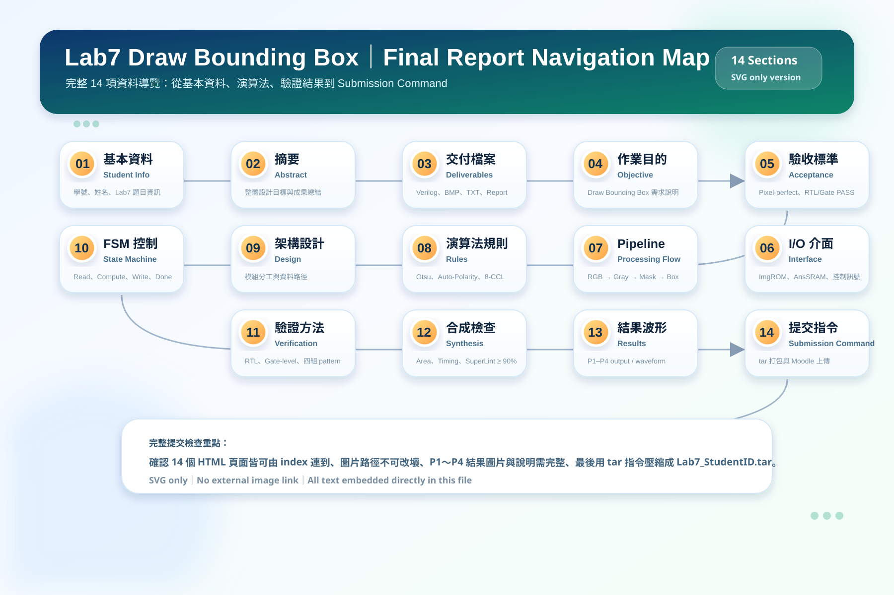
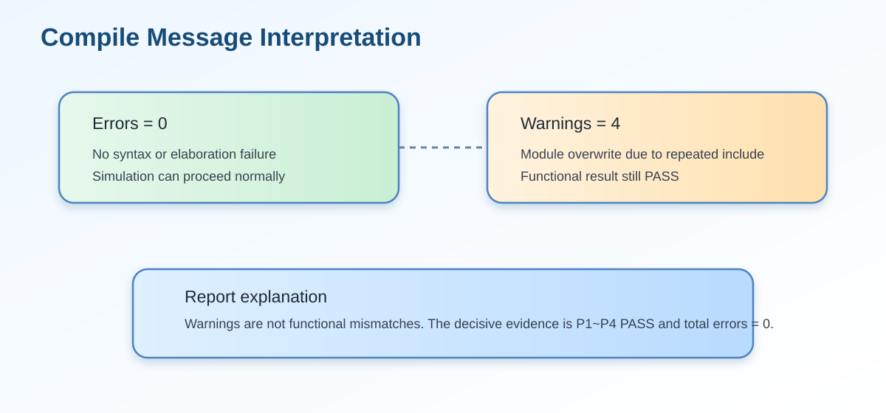
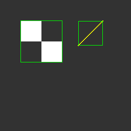
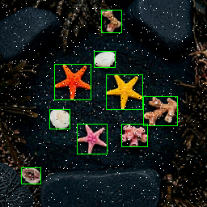

11. 十一、Verilog Compile 與 Simulation Verification
一、題目說明
本題要求完成 drawBbox module，並使用 Verilog/SystemVerilog testbench 進行編譯與功能模擬。
重點不是只確認程式能編譯，而是要確認輸出影像與 golden result 逐 pixel 完全一致。
因此本頁整理 compile flow、testbench 架構、simulation command、P1~P4 terminal result、warning 解釋與輸出 BMP 驗證。

二、編譯與模擬環境
| 項目 | 內容 | 說明 |
|---|---|---|
| Simulator | ModelSim - Intel FPGA Edition vlog 10.5b | 用於編譯 drawBbox.v、CYCLE_MAX.sv、tb.sv 與整合 testbench。 |
| Top Level | tb |
ModelSim log 顯示 top level module 為 tb，由 testbench 控制整體模擬。 |
| DUT | drawBbox |
主要設計模組，負責灰階、Gaussian、Otsu、CCL、Bounding Box 與 Overlay。 |
| Timeout Guard | CYCLE_MAX.sv |
設定最大 cycle 限制，避免設計未拉高 done 時模擬無限執行。 |
| Output Files | drawBbox_result_p1~p4.bmp |
testbench 將 AnsSRAM 的結果轉成 BMP，供報告與視覺檢查使用。 |
| Log Files | terminal_result_p1~p4.log |
記錄各 pattern 的 PASS/FAIL 與 error count。 |

三、Compile Result 解讀
ModelSim compile 階段載入 drawBbox、tb 與 RGBMEM。log 中出現 4 個 warning，主要是因為整合 testbench 與原始 testbench 重複 include 或重複宣告 module，造成
drawBbox already exists and will be overwritten、tb already exists and will be overwritten 類訊息。
這類 warning 不代表功能錯誤；真正的判斷依據是 compile errors 是否為 0，以及 simulation 是否全 pattern PASS。

| Compile 訊息 | 結果 | 解釋 |
|---|---|---|
| Errors | 0 | 沒有語法錯誤、port 連接錯誤或 module 無法 elaboration 的問題。 |
| Warnings | 4 | 主要來自 module overwrite，因為 testbench 包含重複 module 定義；不影響 P1~P4 功能結果。 |
| Top level modules | tb |
表示模擬入口正確設定為 testbench。 |
四、Simulation Command
單一 Pattern 模擬
若要分別測試 P1～P4，可使用 +define+p1 到 +define+p4 切換 pattern。
vlib work
vlog +define+p1 drawBbox.v CYCLE_MAX.sv tb.sv
vsim work.tb
run -all
vlog +define+p2 drawBbox.v CYCLE_MAX.sv tb.sv
vsim work.tb
run -all
vlog +define+p3 drawBbox.v CYCLE_MAX.sv tb.sv
vsim work.tb
run -all
vlog +define+p4 drawBbox.v CYCLE_MAX.sv tb.sv
vsim work.tb
run -all一次執行 P1～P4 的整合指令
若使用整合 testbench，可一次跑完四個 pattern。此次結果即來自整合測試流程。
vlog -reportprogress 300 "+define+p2" drawBbox.v CYCLE_MAX.sv tb.sv tb_all_p1_p4_full.sv
vsim -c -suppress 12023,3015 work.tb -do "run -all; quit -sim"五、P1～P4 RTL Simulation 結果

| Pattern | RTL Result | Error Count | 輸出檔案 | 說明 |
|---|---|---|---|---|
| Pattern 1 | PASS | 0 | drawBbox_result_p1.bmp | 與 golden result 完全一致。 |
| Pattern 2 | PASS | 0 | drawBbox_result_p2.bmp | 與 golden result 完全一致。 |
| Pattern 3 | PASS | 0 | drawBbox_result_p3.bmp | 與 golden result 完全一致。 |
| Pattern 4 | PASS | 0 | drawBbox_result_p4.bmp | 與 golden result 完全一致，並輸出最終 BMP。 |
| Total | ALL PASS | 0 | — | Pixel-perfect RTL implementation achieved。 |
六、Terminal Result 重點摘錄
由 terminal log 可知，四組測試圖皆成功產生 BMP，且每一組 pattern 的 error count 都是 0。 最後 simulation time 顯示為 24011725 ns，可作為 Summary 表格中的 P4 simulation time 參考。
七、輸出 BMP 視覺化結果
以下區塊會自動顯示資料夾中存在的 drawBbox_result_p1~p4.bmp。若單獨開啟 HTML 時看不到圖片，請確認 assets/ 內有對應 BMP 檔案。

Pattern 1：RTL simulation PASS，error count = 0。此 BMP 是 testbench 由 AnsSRAM 輸出資料繪製而成。

Pattern 2：RTL simulation PASS，error count = 0。此 BMP 是 testbench 由 AnsSRAM 輸出資料繪製而成。

Pattern 3：RTL simulation PASS，error count = 0。此 BMP 是 testbench 由 AnsSRAM 輸出資料繪製而成。

Pattern 4：RTL simulation PASS，error count = 0。此 BMP 是 testbench 由 AnsSRAM 輸出資料繪製而成。
八、Testbench 驗證邏輯說明
Lab7 的 testbench 會將 drawBbox 寫入 AnsSRAM 的每個 pixel 與 golden result 逐一比對。
如果有任何一個 pixel 不一致，就會累加 error count 並輸出 mismatch 訊息。
因此 errors = 0 代表輸出影像不只是視覺上相似，而是每個 32-bit pixel 都完全符合 golden。
| 驗證項目 | 檢查方式 | 本次結果 |
|---|---|---|
| Compile correctness | 檢查 vlog 是否有 fatal error 或 syntax error。 | PASS：Errors = 0 |
| Functional correctness | 檢查 P1~P4 每個 pixel 是否與 golden 相同。 | PASS：Total errors = 0 |
| Image output | 輸出 256×256 32-bit BMP 供視覺確認。 | PASS：P1~P4 BMP generated |
| Completion signal | 設計需正確拉高 done，讓 testbench 結束。 |
PASS：simulation finished normally |
九、常見錯誤與本設計避免方式
Port mismatch
若 drawBbox port 名稱或位元寬度與 testbench 不一致，compile 或 elaboration 會失敗。本設計保留題目指定 I/O。
Memory timing error
若 CEN/WEN/A/D 時序錯誤，可能造成輸出整張圖偏移。本設計依 FSM 分階段控制讀寫。
Wrong threshold / polarity
若 threshold 或 auto-polarity 錯誤，CCL 會標錯前景。本設計通過 P1~P4，表示 mask 與後續流程一致。
Bounding box off-by-one
若邊界座標少一格或多一格，pixel compare 會失敗。本次 error = 0 表示 bbox boundary 與 golden 完全一致。
十、報告可直接貼上的正式答案
本設計已完成 drawBbox module，並使用 ModelSim 進行 RTL compile 與 functional simulation。
編譯過程中 top level module 為 tb，並載入 drawBbox 與 RGBMEM。
Compile 結果顯示 errors = 0，warnings = 4；warnings 主要由整合 testbench 重複 include module 所造成，不影響功能驗證。
在 RTL simulation 中，系統依序執行 Pattern 1 至 Pattern 4。每個 pattern 完成後，testbench 會將輸出結果與 golden result 逐 pixel 比對， 並產生對應的 BMP 輸出檔。模擬結果顯示 P1、P2、P3、P4 皆為 PASS，且各 pattern error count 皆為 0，total errors = 0。 因此本設計已達成 pixel-perfect RTL verification。
本次模擬亦成功輸出 drawBbox_result_p1.bmp、drawBbox_result_p2.bmp、
drawBbox_result_p3.bmp 與 drawBbox_result_p4.bmp。
其中 P4 simulation 結束時間為 24011725 ns，可作為 Summary 表格與後續 PA Rank 計算之參考。